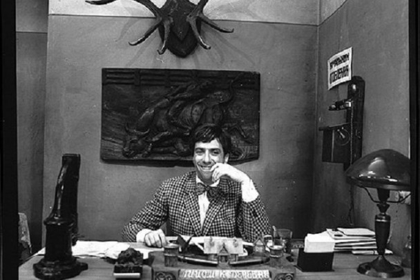
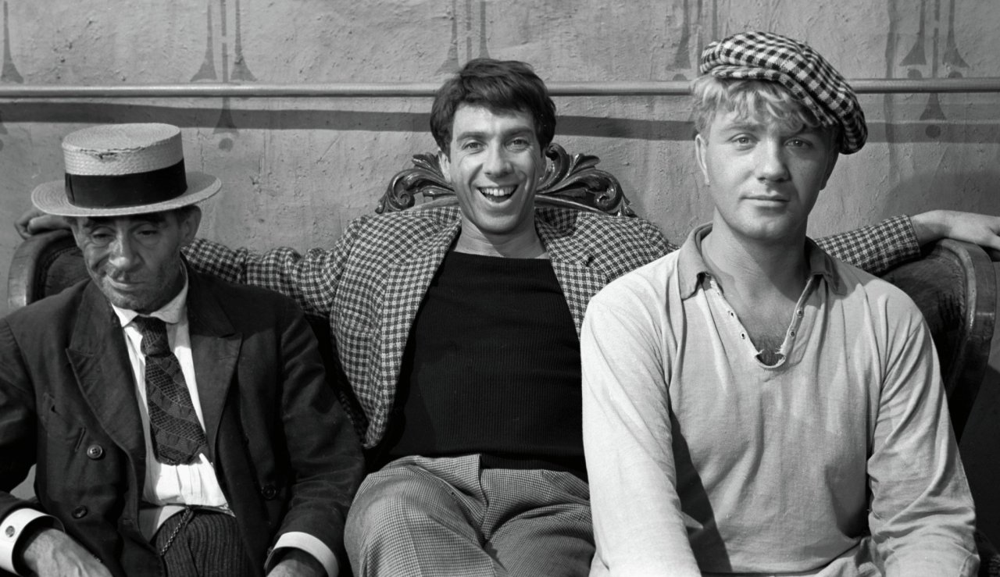
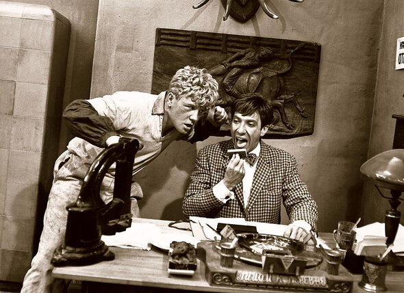
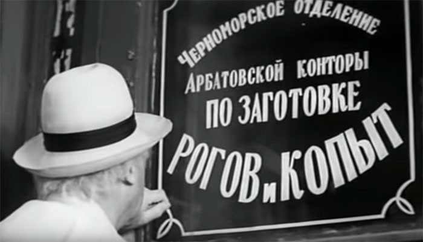
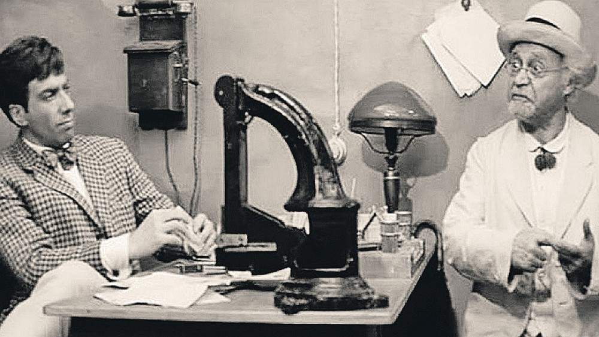
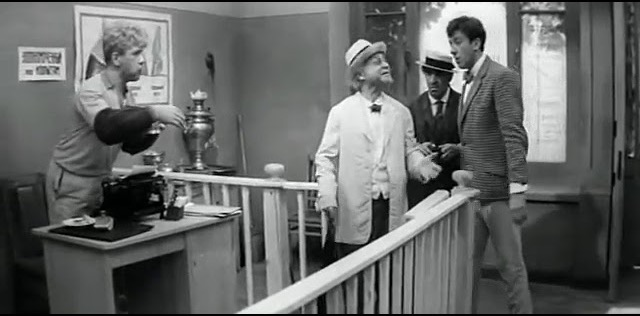
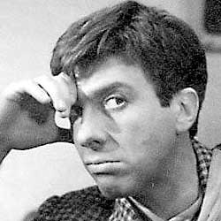
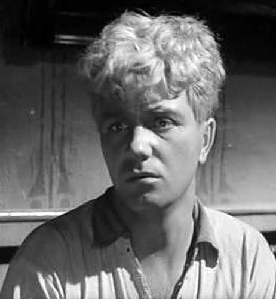
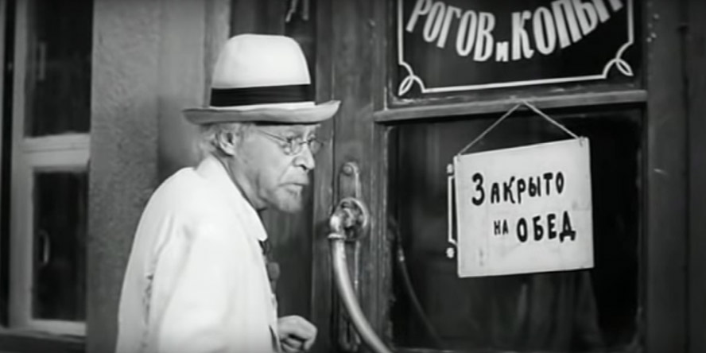

Заготовка. Качество. Дисциплина.
Черноморское отделение Арбатовской конторы: надежный поставщик вторичного сырья для нужд гребеночной и мундштучной промышленности.


Лицо учреждения
На снимке представлено рабочее пространство руководства в часы приема посетителей. Здесь, в атмосфере канцелярской важности и административной ответственности, принимаются ключевые решения по обеспечению промышленного сектора необходимым рого-копытным сырьем.
О компании

Проверено канцеляриейЧерноморское отделение функционирует как ключевой филиал Арбатовской конторы. Мы специализируемся на централизованном сборе и первичной обработке рогов и копыт, обеспечивая сырьевую независимость важнейших отраслей легкой промышленности.
Наша структура объединяет заготовительный аппарат, секретариат и службу оперативной доставки, гарантируя безупречное исполнение плановых показателей и железную исполнительскую дисциплину.
Ключевые направления деятельности
Заготовка рогов
Профессиональный сбор и классификация рогового материала для нужд гребеночных предприятий.
Заготовка копыт
Организация регулярных поставок копытной продукции для мундштучного производства.
Делопроизводство
Высококлассное ведение журналов, учет входящей почты и подготовка сметной документации.
Администрирование
Координация работы персонала, участие в совещаниях и поддержание офисного порядка.
Инфраструктура и рабочая среда




Личный состав
В разделе представлены руководители и сотрудники отделения с указанием должностей, функциональных обязанностей и зон ответственности.

Начальник отделенияОстап Бендер
Формирует направление работы отделения и поддерживает должный уровень административного блеска.

Уполномоченный по копытамШура Балаганов
Курирует профильное направление, сопровождает поручения и держит руку на текущем потоке дел.
М. С. Паниковский
Обеспечивает движение бумаг, срочные визиты и оперативное присутствие вне канцелярского стола.
Фунт
Придает структуре официальный силуэт и выдерживает весь объем представительской серьезности.
Открыт набор в контору
Конторщица (1 штатная единица)
Обязанности:
- Ведение входящей и исходящей переписки;
- Печать писем, справок и внутренних документов;
- Оформление смет, ведомостей и учетных листов;
- Организация приема посетителей;
- Поддержание порядка в кабинете и канцелярской дисциплины.
Кандидатуры рассматриваются при личном визите в часы приема.
Подать прошениеКонтакты
Местоположение: г. Черноморск, помещение со стеклянной дверью, барьером для посетителей и атмосферой канцелярской важности.
График работы:
Понедельник - Пятница: 09:00 - 18:00 (Обед 13:00 - 14:00)
Суббота: 10:00 - 14:00
Воскресенье: выходной
